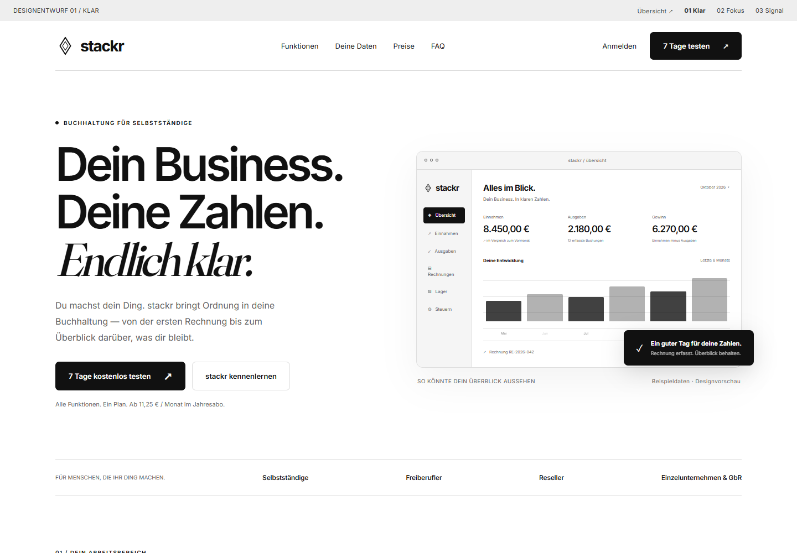
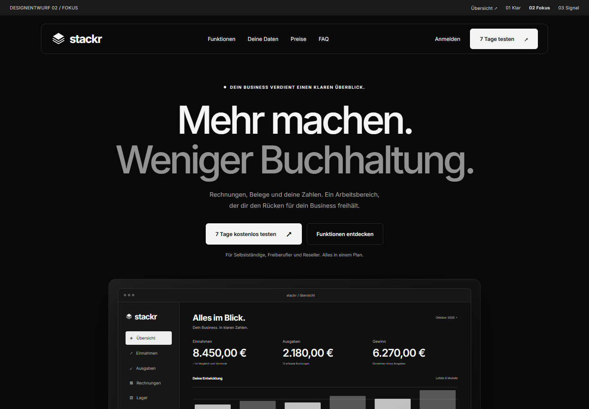
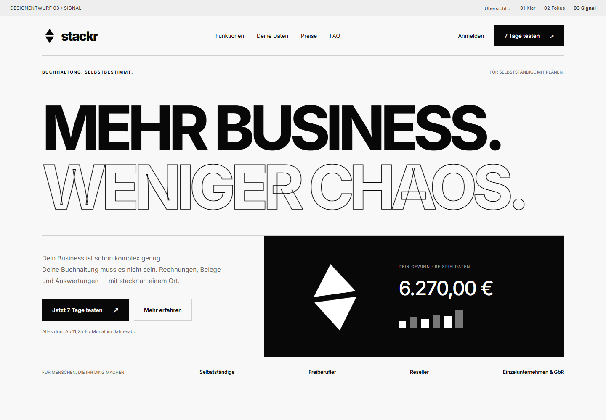

ENTWURF 01 / HELL / EDITORIAL
Klar.
Viel Weißraum, elegante Schrift und ein ruhiger Produktblick. Die doppelte Kontur-Raute bleibt nah am bisherigen Zeichen.
Entwurf ansehenSchwarz. Weiß. Und alles dazwischen. Drei eigenständige Landing Pages und drei neue Interpretationen der Raute — inspiriert von der reduzierten Gestaltung von CFC.

Viel Weißraum, elegante Schrift und ein ruhiger Produktblick. Die doppelte Kontur-Raute bleibt nah am bisherigen Zeichen.
Entwurf ansehen
Schwarze Flächen, feine Linien und das Dashboard im Zentrum. Die gestapelten Rauten machen aus dem Namen ein Zeichen.
Entwurf ansehen
Große Typografie und ein konsequentes Raster. Die geteilte, gefüllte Raute gibt stackr eine prägnante Silhouette.
Entwurf ansehenDie Raute bleibt der gemeinsame Ausgangspunkt. Alle drei Zeichen sind als skalierbare SVGs angelegt und funktionieren in Schwarz auf Weiß und Weiß auf Schwarz.
Die ursprüngliche Form als doppelte Kontur. Ruhig, präzise und besonders passend zum hellen Entwurf.
Logo als SVG herunterladen ↗Drei Ebenen, ein Zeichen. Rauten werden zum Stapel — eine direkte Verbindung zum Namen stackr.
Logo als SVG herunterladen ↗Die bekannte Raute, durch eine klare Fuge geteilt. Kompakt und kräftig, auch als kleines App-Icon.
Logo als SVG herunterladen ↗